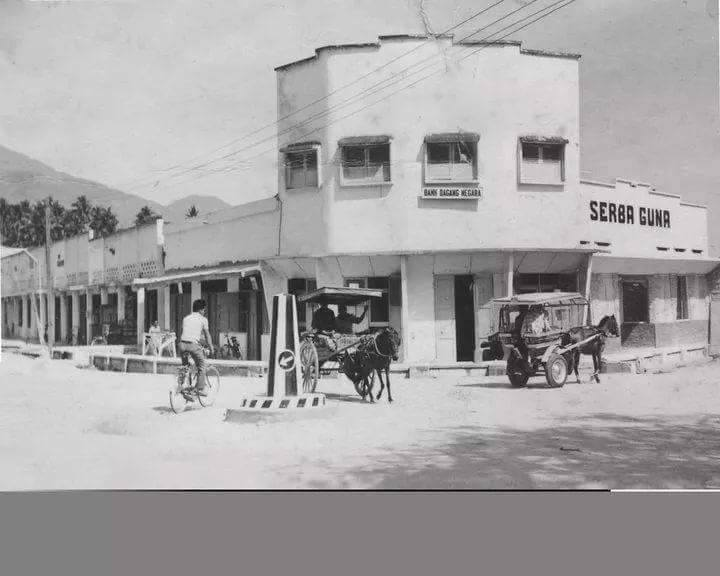
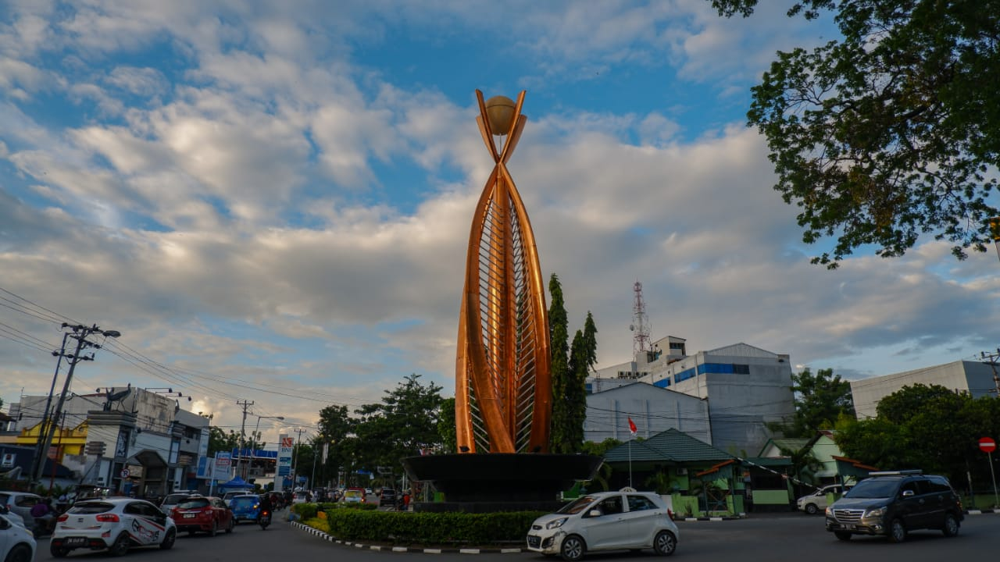
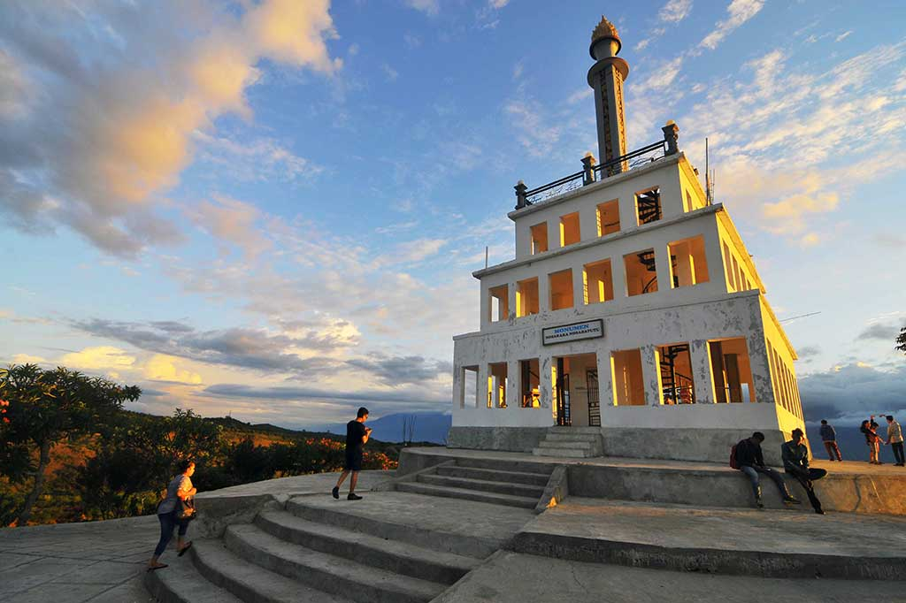
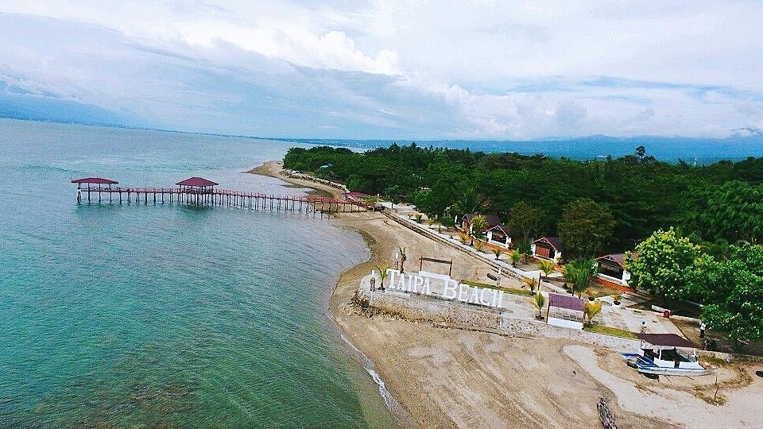

Sejarah

Asal usul nama kota Palu adalah kata Topalu'e yang artinya Tanah yang
terangkat karena daerah ini awalnya lautan. Pernah terjadi gempa dan
pergeseran lempeng (palu koro) sehingga daerah yang tadinya lautan tersebut
terangkat dan membentuk daratan lembah yang sekarang menjadi Kota Palu.
Istilah lain juga menyebutkan bahwa kata asal usul nama Kota Palu berasal
dari bahasa Kaili VOLO yang berarti bambu yang tumbuh dari daerah Tawaeli
sampai di daerah sigi. Bambu sangat erat kaitannya dengan masyarakat suku Kaili,
ini dikarenakan ketergantungan masyarakat Kaili dalam penggunaan bambu sebagai
kebutuhan sehari-hari mereka, baik itu dijadikan Bahan makanan (Rebung), Bahan
bangunan (Dinding, tikar, dll), Perlengkapan sehari hari, permainan (Tilako), serta
alat musik (Lalove) dihimpun dari berbagai sumber.
Geografis

Secara geografis, Kota Palu terletak pada kawasan dataran lembah Palu dan teluk Palu
sehingga wilayahnya terdiri dari lima bentang alam yang berbeda seperti pegunungan, lembah,
sungai, teluk, dan lautan. Wilayah Kota Palu berbatasan dengan Kabupaten Donggala di sebelah timur,
utara dan barat, Kabupaten Sigi di sebelah selatan, kabupaten Sigi di sebelah barat, dan
Kabupaten Parigi Moutong di sebelah timur. Terdapat 8 kecamatan di Kota Palu, yaitu Kecamatan Palu Barat,
Kecamatan Tatanga, Kecamatan Ulujadi, Kecamatan Palu Selatan, Kecamatan Palu Timur, Kecamatan Mantikulore,
Kecamatan Palu Utara, dan Kecamatan Tawaeli.
Jumlah penduduk Kota Palu pada tahun 2016 yaitu 374.020 jiwa yang terdiri dari 188.017 jiwa penduduk laki-laki
dan 186.003 jiwa penduduk perempuan. Jumlah penduduk Kota Palu mengalami pertumbuhan sebesar 1,61% dari tahun 2015 ke tahun 2016.
Wisata
Palu mengalami bencana pada tahun 2018 silam, dan membuat hampir semua pariwisata berhenti total. Namun perlahan
tapi pasti, Palu mulai bangkit dan menata kembali pariwisatanya. Jika kamu sedang berada di Sulawesi Tengah, jangan segan
untuk datang ke kota cantik ini. Palu meruakan ibu kota Sulawesi Tengah.
Monumen Perdamaian

Berada di Tondo, Palu Timur. Monumen perdamaian atau yang dikenal dengan Monumen Nosarara Nosabatutu merupakan tempat populer yang juga
wajib kamu kunjungi. Selain memiliki spot foto yang indah dan asri, kamu juga bisa melihat pemandangan yang indah di sekitarnya.
Pantai Taipa

Wisata pantai di Palu Utara ini biasanya menjadi jujugan wisatawan di akhir pekan. Mereka datang biasanya sekedar bersantai, gethering, hingga
snorkeling. Pantai Taipa memang terkenal akan keindahan taman bawah lautnya. jika ingin menikmati taman bawah laut, kamu bisa snorkeling sekitar
50 meter dari bibir pantai. Selain snorkeling, kamu juga bisa bersatai di cottage-cottage yang bisa disewa sambil menikmati pemandangan pantai
dan Gunung Gawalisa yang gagah menjulang.